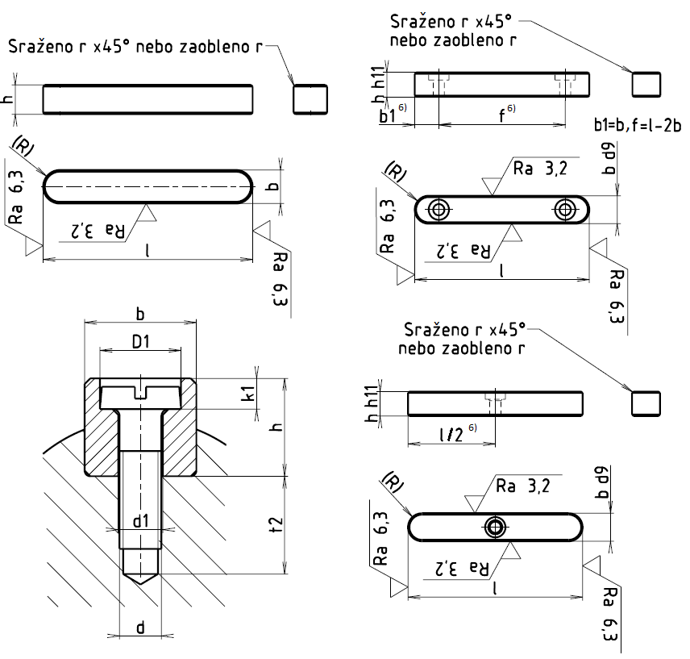

Příklad označení těsného pera šířky b=6 mm s úchylkami e7, délky l=56 mm:
PERO ČSN 02 2562 – 6e7×6×56
Příklad označení pera šířky b=10 mm, délky l=56 mm, se dvěma přídržnými šrouby:
PERO ČSN 02 2570 – 10×8×63
Příklad označení těsného šířky b=8 mm, délky l=32 mm, s jedním přídržným šroubem:
PERO ČSN 02 2575 – 8×7×32
| Pero | Závit d |
Délka pera l podle ČSN | G1*) [g.mm-1] |
||||||||
|---|---|---|---|---|---|---|---|---|---|---|---|
| b | h | r | D1 | d1 | k1 | t2 | 02 2562 | 02 2570 | 02 2575 | ||
| 2 | 2 | 0,2 | – | – | – | – | – | 8 až 20 | – | – | 0,314 |
| 3 | 3 | 0,2 | – | – | – | – | – | 8 až 36 | – | – | 0,071 |
| 4 | 4 | 0,4 | – | – | – | – | – | 10 až 45 | – | – | 0,126 |
| 5 | 5 | 0,4 | – | – | – | – | – | 12 až 56 | – | – | 0,196 |
| 6 | 6 | 0,4 | – | – | – | – | – | 16 až 70 | – | – | 0,28 |
| 8 | 7 | 0,4 | 5,8 | 3,2 | 2,2 | 7 | M3 | 20 až 90 | – | 20 až 36 | 0,43 |
| 10 | 8 | 0,6 | 5,8 | 3,2 | 2,2 | 8 | M3 | 25 až 110 | 50 až 110 | 25 až 45 | 0,628 |
| 12 | 8 | 0,6 | 7,4 | 4,3 | 3,0 | 9 | M4 | 32 až 110 | 63 až 140 | 32 až 50 | 0,75 |
| 14 | 9 | 0,6 | 9,4 | 5,3 | 3,7 | 9 | M5 | 40 až 140 | 70 až 160 | 40 až 56 | 0,99 |
| 16 | 10 | 0,6 | 9,4 | 5,3 | 3,7 | 10 | M5 | 45 až 180 | 80 až 180 | 44 až 63 | 1,256 |
| 18 | 11 | 0,6 | 10,5 | 6,4 | 4,2 | 10 | M6 | 50 až 200 | 90 až 200 | 50 až 70 | 1,55 |
| 20 | 12 | 0,6 | 10,5 | 6,4 | 4,2 | 10 | M6 | 56 až 220 | 100 až 220 | 56 až 80 | 1,88 |
| 22 | 14 | 0,6 | 10,5 | 6,4 | 4,2 | 11 | M6 | 63 až 250 | 125 až 250 | 63 až 90 | 2,41 |
| 25 | 14 | 0,6 | 13,5 | 8,4 | 5,3 | 12 | M8 | 70 až 280 | 140 až 280 | 70 až 90 | 2,75 |
| 28 | 16 | 1,0 | 16,5 | 10,5 | 6,3 | 14 | M10 | 80 až 315 | 160 až 315 | 80 až 100 | 3,52 |
| 32 | 18 | 1,0 | 16,5 | 10,5 | 6,3 | 14 | M10 | 90 až 355 | 180 až 355 | 90 až 100 | 4,52 |
| 36 | 20 | 1,0 | 18,5 | 13,0 | 7,3 | 15 | M12 | 100 až 400 | 200 až 400 | 100 až 110 | 5,65 |
| 40 | 22 | 1,0 | 18,5 | 13,0 | 7,3 | 18 | M12 | 110 až 400 | 250 až 400 | – | 6,91 |
| 45 | 25 | 1,6 | 18,5 | 13,0 | 7,3 | 18 | M12 | 125 až 400 | 280 až 400 | – | 8,83 |
| 50 | 28 | 1,6 | 19,0 | 13,0 | 7,3 | 18 | M12 | 140 až 400 | 315 až 400 | – | 10,99 |